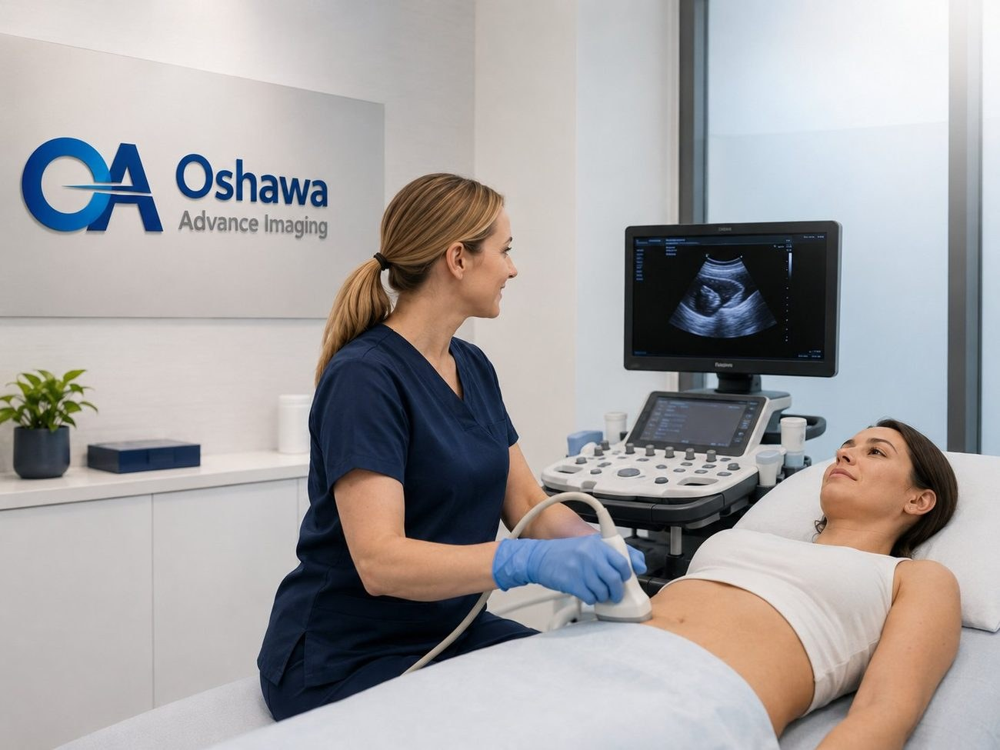
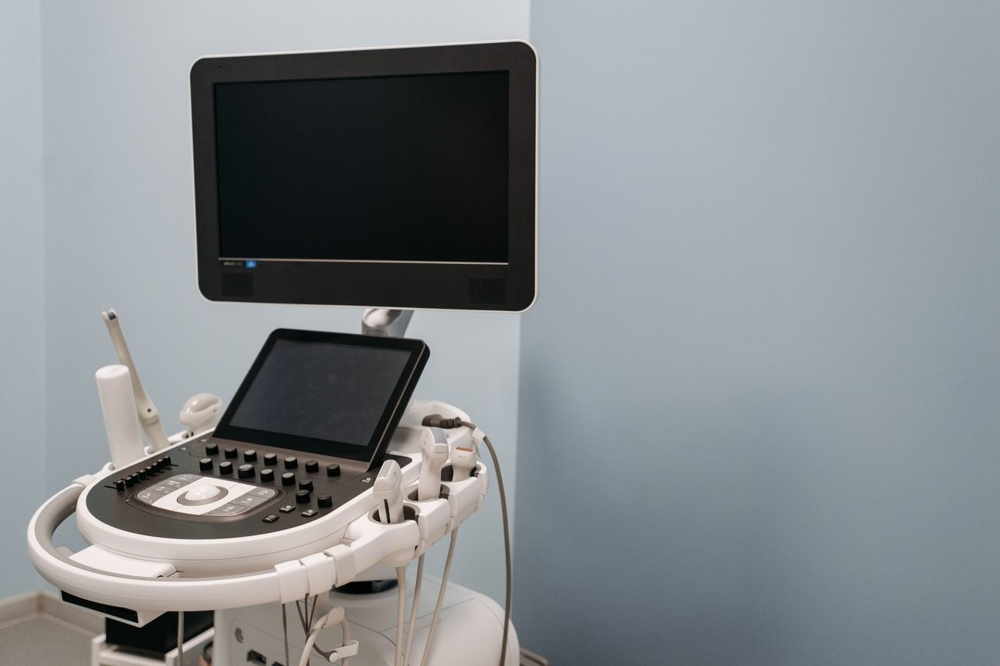

The short version
- An abdominal ultrasound looks at the liver, gallbladder, bile ducts, pancreas, spleen and kidneys, using sound waves and no radiation.
- It is the first test most doctors order for upper abdominal pain, suspected gallstones, abnormal liver blood tests and fatty liver.
- You will usually be asked not to eat for several hours beforehand. An empty stomach keeps the gallbladder full and reduces gas, so the organs can be seen clearly. We confirm your instructions when you book.
- The scan takes about 20 to 45 minutes and is painless. You may be asked to hold your breath and roll onto your side.
- A qualified physician interprets the images and the report goes to the provider who ordered it.
"It hurts here, under my ribs, especially after I eat." It is one of the most common things a family doctor hears, and an abdominal ultrasound is usually the next step. It is also one of the exams we perform most often at our clinic in downtown Oshawa.
This guide explains what an abdominal ultrasound looks at, the most common reasons it is ordered, how to prepare so the scan answers your doctor's question the first time, and what happens on the day.
What an abdominal ultrasound looks at
A complete abdominal ultrasound examines the solid organs and structures of the upper abdomen:
Scroll sideways to see the full table.
| Organ | What ultrasound can show |
|---|---|
| Gallbladder and bile ducts | Gallstones, sludge, gallbladder wall thickening or inflammation, polyps, and widened bile ducts that may point to a blockage |
| Liver | Size, fatty change, signs of scarring, cysts and other focal areas |
| Pancreas | Size and appearance of the parts that can be seen, swelling, and fluid collections |
| Spleen | Enlargement and focal areas |
| Kidneys | Size, stones, swelling caused by blockage (hydronephrosis), and cysts |
Ultrasound shows these organs in real time, so the sonographer can watch them move as you breathe and change position. It does not use radiation and is safe for adults, children and during pregnancy. Because sound waves do not travel well through air, the bowel, which contains gas, is not well seen on a routine abdominal ultrasound.
The most common reasons it is ordered
Upper right abdominal pain and suspected gallstones. Gallstones are very common, and many people have them without symptoms. When a stone blocks the gallbladder's outlet, it can cause attacks of steady pain in the upper right or middle abdomen, often after a fatty meal and sometimes spreading to the right shoulder or back. Ultrasound is the standard first test for gallstones and is very good at finding them.
Abnormal liver blood tests. When routine bloodwork shows raised liver enzymes, ultrasound helps your doctor look for a cause, such as fatty liver, gallstones in the ducts, or changes in the liver's texture.
Fatty liver disease. Fat build up in the liver, now often called MASLD (metabolic dysfunction associated steatotic liver disease), is one of the most common liver conditions in Canada and is closely linked to diabetes, high cholesterol and carrying extra weight. On ultrasound, a fatty liver looks brighter than normal. Finding it early gives you and your doctor the chance to address it before it progresses.
Kidney concerns. Flank pain, suspected kidney stones, blood in the urine, or changes in kidney function on bloodwork. Kidney imaging may be part of an abdominal exam or booked as a separate kidney and bladder ultrasound, which has different preparation (see below).
Other reasons. An enlarged liver or spleen felt during an exam, follow up of a known cyst or finding, bloating or pain that has not been explained, and assessment after an abnormal result on another test.
When abdominal pain cannot wait. Go to the nearest emergency department, or call 911, for severe abdominal pain that lasts for hours, pain with a fever and chills, yellowing of the skin or eyes, vomiting that will not stop, vomiting blood, black or bloody stools, or pain with a swollen, rigid belly. We are an outpatient clinic and are not set up for emergencies.
How to prepare
Preparation makes a real difference to an abdominal ultrasound. When you eat, the gallbladder squeezes and empties, which can make it impossible to assess, and food and drink add gas that blocks the view of the pancreas and other organs. An unprepared scan may not answer your doctor's question and may need to be repeated.
- Fast before your exam
You will usually be asked not to eat for several hours before the scan. For a morning appointment, that usually means nothing to eat after midnight. We confirm the exact instructions for your exam when you book.
- Small sips of water are usually fine
Avoid coffee, juice, milk, carbonated drinks and gum, which can stimulate the gallbladder or add gas. Ask us when booking if you are unsure.
- Take your usual medicines
Take them with a small sip of water unless your doctor has told you otherwise. If you take insulin or other medicines for diabetes, or have a condition that makes fasting difficult, tell us when booking. We will try to give you an early morning appointment, and you should ask your doctor how to adjust your doses.
- Bring your health card and requisition
Wear comfortable two piece clothing. You may be asked to change into a gown or simply lift your top.
If your requisition includes a kidney and bladder or pelvic ultrasound as well, you will also need a full bladder, usually by drinking water an hour before and not emptying your bladder. Full instructions for every exam type are on our patient preparation page.

What happens during the scan
You lie on your back on a padded exam bed. The sonographer applies warm gel to your abdomen and moves the probe over the area, pressing gently to get clear images. You may be asked to take a deep breath and hold it, which moves the liver and gallbladder down from under the ribs, and to roll onto your left side for part of the scan. If you have a tender spot, the sonographer may press over it to see whether the pain comes from the gallbladder. Let us know if anything is too uncomfortable.
Most abdominal ultrasounds take 20 to 45 minutes. Afterwards you can wipe off the gel, eat, drive and go back to your normal day.
Results
Your images are interpreted by a qualified physician, and a written report is sent to the provider who ordered the exam. Our sonographers cannot discuss findings during the scan, because results need to be explained alongside your symptoms, bloodwork and history. Book a follow up with your provider to review the report. If something on the scan needs prompt attention, the provider is contacted directly.
Common next steps include no further action, a change in diet, repeat bloodwork, a referral to a surgeon for troublesome gallstones, or a follow up scan to confirm a finding is stable.
Booking an abdominal ultrasound in Oshawa
Abdominal ultrasound at our clinic is covered by OHIP with a valid health card and a requisition from your physician, nurse practitioner or midwife. Your provider can fax it to us at +1 (289) 731-2606, or give it to you to bring. Then call +1 (289) 481-0263 or request an appointment online. We will confirm your appointment and your preparation instructions.
We are at 115 Simcoe St S, 3rd Floor, in downtown Oshawa, and open Monday to Friday from 9:00 AM to 6:00 PM and Saturday from 10:00 AM to 4:00 PM. For a full walk through of the visit from start to finish, read what to expect at your ultrasound appointment.
Common questions
Why do I need to fast before an abdominal ultrasound?
Eating makes the gallbladder empty, which can make it impossible to assess, and food and drink add gas that blocks the view of the pancreas and other organs. Fasting gives the clearest images and avoids having to repeat the scan.
Can I drink water before my abdominal ultrasound?
Small sips of water are usually fine, including to take your medicines. Avoid coffee, juice, milk, carbonated drinks and gum. We confirm your exact instructions when you book.
Do I need a full bladder?
Not for an abdominal ultrasound alone. If your requisition also includes a kidney and bladder or a pelvic ultrasound, you will need a full bladder as well, and we will explain how when you book.
How long does an abdominal ultrasound take?
Usually 20 to 45 minutes, depending on what your provider has asked us to look at.
Can an abdominal ultrasound find gallstones?
Yes. Ultrasound is the standard first test for gallstones and is very good at detecting them, as well as signs of gallbladder inflammation and widened bile ducts.
Is it safe for children?
Yes. Ultrasound uses no radiation and is commonly used for children. Preparation for children may be shorter, so please call us to confirm before the appointment.
This article is general information only and does not replace medical advice. Please speak with your physician or healthcare provider about your own health concerns. Imaging results are interpreted by qualified professionals and sent to your referring physician.